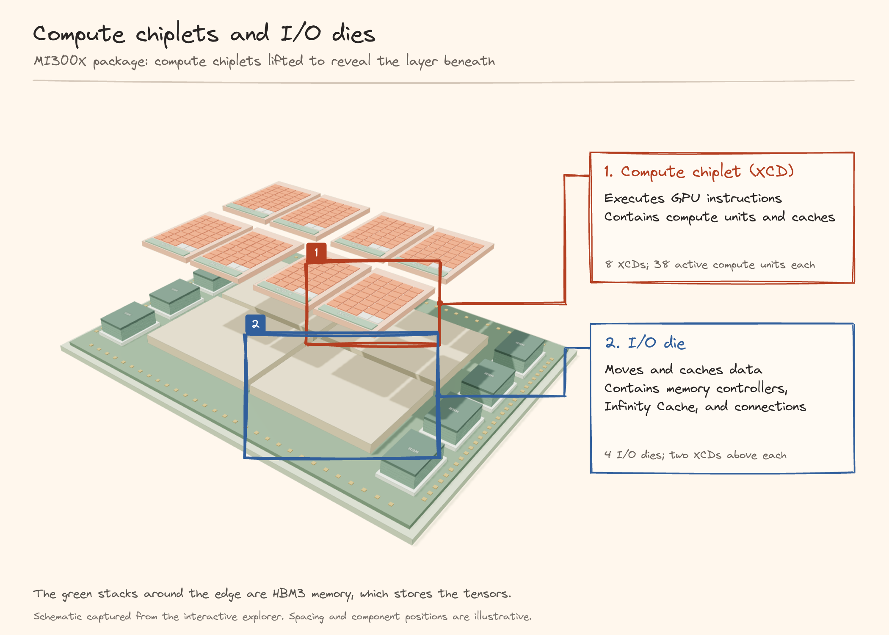

This article will iteratively explore various optimization techniques for improving GEMM performance on AMD GPUs using gluon and eventually outperform rocBLAS on the Mi300x.
MI300X Architecture
Before you start this blog post, I'd highly recommend reading my earlier post that walks through the entire architecture of the Mi300x here Inside the MI300X.


Once you understand the hardware, we can dive into the software optimizations.
Kernel 1 - dot product
We have two matrices A and B of shape 4096 × 4096 both at fp16. The output matrix C will have the shape 4096 × 4096.
The design choice we have to make in this kernel is how much of C should one group of threads compute? For our simple kernel, let's give each workgroup(a block in CUDA lingo) a 16 × 16 output tile. This means workgroup 0 owns rows 0–15 and columns 0–15 and so on. There are 4096 / 16 = 256 tiles across and 256 down, so we launch 65,536 workgroups. Each has four waves.

What does one workgroup do?
Here's the launch setup. The first two block sizes give us the output tile. The third, BLOCK_K = 32, tells us how many values of each dot product we'll sum on one pass.
BLOCK_M, BLOCK_N, BLOCK_K = 16, 16, 32
num_warps = 4For the first pass, workgroup 0 loads the first 32 values from each of its 16 rows of A and columns of B, creates a tile of 16x32 and 32x16 and accumulates the dot products. You then update the pointers by 32 across the K dimension and repeat.
a_ptrs = a_ptr + rows[:, None] * stride_am + a_k[None, :] * stride_ak
b_ptrs = b_ptr + cols[:, None] * stride_bn + b_k[None, :] * stride_bk
acc = gl.full((BLOCK_M, BLOCK_N), 0, gl.float32, layout=c_layout)
for k in range(0, gl.cdiv(K, BLOCK_K)):
remaining = K - k * BLOCK_K
a = gl.load(a_ptrs, (rows[:, None] < M) & (a_k[None, :] < remaining), other=0)
b = gl.load(b_ptrs, (cols[:, None] < N) & (b_k[None, :] < remaining), other=0)
products = a.to(gl.float32)[:, None, :] * b.to(gl.float32)[None, :, :]
acc += gl.sum(products, axis=2)
a_ptrs += BLOCK_K * stride_ak
b_ptrs += BLOCK_K * stride_bkWith M = N = K = 4096 and FP16 inputs, our naive Triton kernel measured 9.879713 TFLOP/s. On the same problem, rocBLAS measured 598.596515 TFLOP/s.

Our first kernel reaches 1.65% of rocBLAS performance. Looks like we have a lot of work to do!
Kernel 2 - MFMA
What's MFMA?
MFMA stands for matrix fused multiply-add. It's an instruction that lets a wave use AMD's matrix cores to multiply two small tiles and add the result to a tile of running sums. Think of it as acc = A @ B + acc. Each entry in that result is still a dot product, just like in Kernel 1.
Why use it for our dot products?
In Kernel 1, products multiplies matching values and gl.sum(products, axis=2) adds them along K. Follow two outputs in the generated assembly. These two instructions run at different points in the loop.
v_pk_mul_f32 v[82:83], v[64:65], v[78:79] op_sel_hi:[0,1]
v_pk_fma_f32 v[62:63], v[62:63], v[76:77], v[82:83] op_sel_hi:[0,1,1]The multiply puts two FP32 products in v82 and v83, one for each of two output columns. The multiply-add reads those products, adds another product to each, and leaves two partial sums in v62 and v63. So far, each lane has only added the K values it holds. How does it get the rest?
v_mov_b32_dpp v74, v62 quad_perm:[1,0,3,2] row_mask:0xf bank_mask:0xf bound_ctrl:1
v_mov_b32_dpp v75, v63 quad_perm:[1,0,3,2] row_mask:0xf bank_mask:0xf bound_ctrl:1
v_pk_add_f32 v[62:63], v[62:63], v[74:75]This is the last lane exchange for those two sums. Read quad_perm:[1,0,3,2] left to right. Lane 0 reads lane 1, lane 1 reads lane 0, and lanes 2 and 3 do the same within each group of four. The two moves fetch the neighbor’s partial sums into v74 and v75. The packed add then adds them to the lane’s own two sums. Earlier rounds do the same with partners farther away. That's the work behind our gl.sum. Kernel 1 assembly.
Now look at what gl.amd.cdna3.mfma(a, b, acc) generates in Kernel 2. These four instructions appear back to back for one 16 × 16 output patch.
v_mfma_f32_16x16x16_f16 v[38:41], a[12:13], a[78:79], v[54:57]
v_mfma_f32_16x16x16_f16 v[38:41], a[68:69], a[82:83], v[38:41]
v_mfma_f32_16x16x16_f16 v[38:41], a[72:73], a[86:87], v[38:41]
v_mfma_f32_16x16x16_f16 v[54:57], a[76:77], a[90:91], v[38:41]Read the first line from the outside in. The last operand, v[54:57], holds the old sums. The first operand, v[38:41], receives the updated sums. The two register pairs in the middle hold the FP16 inputs, four values per lane from each tile. Across 64 lanes, that gives the matrix core a 16 × 16 tile from A and a 16 × 16 tile from B. It adds 16 products to each of the 256 output sums in one wave instruction. Each lane gets four FP32 sums back.
Now follow v[38:41] from the first line to the last operand of the second. The next MFMA picks up exactly where the first left off, with new inputs for the next 16 positions along K. Four instructions cover all 64 K positions in this loop pass, and the fourth writes the sums back to v[54:57]. That's the payoff for our dot products. Each MFMA performs 16 × 16 × 16 = 4,096 multiply-accumulates, including the sum along K that took explicit lane exchanges and adds in Kernel 1. Kernel 2 assembly.
To better understand this instruction, let's take an example and follow it end to end
Let's follow one number from the inputs to the store. We want C[1, 0], so we need all 4096 values in row 1 of A and all 4096 values in column 0 of B. Indexing starts at zero.
In 00_naive_mfma.py, we give each workgroup a 256 × 256 piece of C. Our 4096 × 4096 matrix fits 16 workgroups across and 16 down. That's 256 workgroups in the launch. Row 1 and column 0 both fall in the first square, so workgroup 0 owns our output.

BLOCK_M, BLOCK_N, BLOCK_K = 256, 256, 64
num_warps = 4
GRID_MN = triton.cdiv(M, BLOCK_M) * triton.cdiv(N, BLOCK_N)
grid = (GRID_MN, 1)2. Which of the four waves owns it?
Zoom into the first 32 rows and columns of that blue square. The kernel sets warps_per_cta=[2, 2]. That gives us two rows of waves, with two waves per row. In this kernel a warp is an AMD wave with 64 lanes numbered 0–63. Each wave has its own lane 1.
![Top-left 32 by 32 region of workgroup 0. Wave 0 is upper left, wave 1 upper right, wave 2 lower left and wave 3 lower right. C[1,0] is marked inside wave 0.](./artifacts/amd-gemm/four-wave-tile.png)
Rows 0–15 and columns 0–15 belong to wave 0. That's the wave we'll follow. The same four waves cover the next 32 × 32 region, and the next. There are 8 × 8 such regions in the workgroup tile, so each wave owns 64 patches. That's how four waves cover more than 1024 outputs.
![Workgroup 0's 256 × 256 tile has 8 rows of 8 regions. In every region, wave 0 owns the upper-left 16 × 16 patch, wave 1 the upper right, wave 2 the lower left and wave 3 the lower right. The first region is enlarged to show C[1,0] in wave 0.](./artifacts/amd-gemm/workgroup-wave-patches.png)
3. Load the inputs, then put them in MFMA order
On the first pass, the workgroup loads 64 positions along K. It reads 256 rows × 64 columns from A and 64 rows × 256 columns from B. For our first instruction, zoom in on K = 0–15. Wave 0 needs a 16 × 16 tile from each input.
ga = gl.load(a_ptrs, mask=offs_ak[None, :] < K - k * BLOCK_K, other=0.0)
gb = gl.load(b_ptrs, mask=offs_bk[:, None] < K - k * BLOCK_K, other=0.0)
a = gl.convert_layout(ga, layout=dotOpLayoutA)
b = gl.convert_layout(gb, layout=dotOpLayoutB)Why convert? Take the first eight values in A row 1. The load layout gives all eight to wave 0, lane 8. MFMA expects four values per lane along K. After conversion, lane 1 has the first four and lane 17 has the next four. They're still the same eight numbers. Here's where every input lives when wave 0 issues the instruction.


4. Pair each value in row 1 of A with a value in column 0 of B
Put one finger on A[1, 0] and another on B[0, 0]. Multiply those two values. Now move one cell right in A and one cell down in B. Multiply again. The row of A stays 1 and the column of B stays 0. Only the shared index k moves. Every product A[1, k] × B[k, 0] adds to the same output, C[1, 0].
Let's put numbers in the blue cells. Say lane 1 holds [1, 2, 3, 4] from A and lane 0 holds [4, 3, 2, 1] from B, in order of increasing k. At k = 1, for instance, the second value in each list gives us 2 × 3 = 6. You can read all four pairs below.

The blue cells contribute 20. For the rest of this example, let all remaining values in this row and column be 1. The next twelve pairs each contribute 1 × 1. So the first MFMA takes the running sum for C[1, 0] from zero to 20 + 4 + 4 + 4 = 32. All four colors belong to that one instruction.
5. Where does the 32 for C[1, 0] go?
Wave 0 just added up the first 16 products for C[1, 0] and got 32. Find row 1, column 0 in the output tile below. That cell is labelled 1 because lane 1 keeps its running sum.
![In wave 0’s output tile, row 1, columns 0 through 3 all belong to lane 1. Enlarged below the tile, its four accumulator slots correspond to C[1,0], C[1,1], C[1,2] and C[1,3]. Slot 0 holds 32 after the first instruction.](./artifacts/amd-gemm/mfma-output-lanes.png)
transposed=True layout, each column here gets its own FP32 register in lane 1. Download Excalidraw source. AMD Matrix Instruction Calculator.Why do all four cells say 1? Each label answers “which lane keeps this sum?” All four answers are lane 1. The slot tells us which sum inside that lane. For the first 16 K positions, the four slots use these inputs:
slot 0 A row 1 · B column 0 → C[1,0] (32 so far)
slot 1 A row 1 · B column 1 → C[1,1]
slot 2 A row 1 · B column 2 → C[1,2]
slot 3 A row 1 · B column 3 → C[1,3]For example, if the first 16 entries of B column 1 were zero, every product for slot 1 would be zero. Lane 1 would then hold 32 in slot 0 and 0 in slot 1 after the same instruction. Each slot keeps accumulating its own output. For slot 0, the next sixteen products of 1 × 1 take its sum from 32 to 48.
6. Keep the same output and move along K
acc = gl.zeros((BLOCK_M, BLOCK_N), gl.float32, mfmaLayout)
for k in range(0, gl.cdiv(K, BLOCK_K)):
# Load and convert the next pair of tiles as above.
acc = gl.amd.cdna3.mfma(a, b, acc)
a_ptrs += BLOCK_K * stride_ak
b_ptrs += BLOCK_K * stride_bkThat mfma(a, b, acc) call covers the workgroup's tiles. A hardware instruction only consumes 16 K positions, so each 16 × 16 patch needs four instructions in this 64-wide loop pass. Follow just our one register in wave 0, lane 1.
K positions C[1,0] running sum
start 0
0–15 0 + 32 = 32
16–31 32 + 16 = 48
32–47 48 + 16 = 64
48–63 64 + 16 = 80 end of the first loop pass
...
4080–4095 4096 + 16 = 4112Each new pass moves 64 columns across A and 64 rows down B. After 64 passes, that one output has received 256 updates × 16 products = 4096 products. The kernel casts the FP32 accumulator to FP16 and stores it.
c = acc.to(a_ptr.dtype.element_ty)
# The store uses the same layout as the accumulator.
gl.store(c_ptrs, c, mask=c_mask)For our example, workgroup 0, wave 0, lane 1 writes 4112 to C[1, 0].

With MFMA we're at 37.73% of rocBLAS performance, up from 1.65% with our first kernel.
Where did the time go?
For Kernel 2 we also have a separate MI300X trace with 1024 × 1024 inputs. At 256 × 256 outputs per workgroup that's only 16 workgroups in the launch. The four recorded waves each have 1024 / 64 = 16 K steps. The wait at 0x3850 shows 64 hits, consistent with each wave reaching it once per step.
What is the wave waiting for? There's a scratch_load_dwordx2 earlier in the same region. To tell how much of the wait comes from loading A or B, we'd have to check which memory operations are still outstanding at s_waitcnt vmcnt(0).